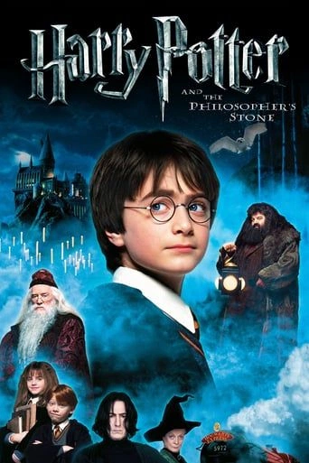

Tu guía al mundo mágico
Juro solemnemente que mis intenciones no son buenas
El universo de Harry Potter, concebido por J. K. Rowling, ha fascinado a generaciones enteras transportándonos al emblemático Colegio Hogwarts de Magia y Hechicería. A través de sus pasillos encantados, secretos milenarios y criaturas extraordinarias, la historia relata el descubrimiento de la identidad, el valor inquebrantable de la amistad y la lucha eterna contra las fuerzas tenebrosas. Un viaje inolvidable donde el amor, la lealtad y las decisiones personales demuestran ser más poderosos que cualquier encantamiento.
La saga de libros


La serie literaria consta de siete volúmenes publicados entre 1997 y 2007. Traducida a más de 80 idiomas y con más de 500 millones de copias distribuidas en todo el planeta, cada tomo profundiza en la madurez de sus protagonistas y desvela las complejas raíces del mundo mágico, desde la llegada de la carta de aceptación hasta la épica Batalla de Hogwarts.
Adaptación cinematográfica
El paso de la saga literaria a la gran pantalla fue una de las producciones más ambiciosas en la historia del cine moderno. A lo largo de ocho largometrajes producidos por Warner Bros., directores como Chris Columbus, Alfonso Cuarón, Mike Newell y David Yates dieron vida con maestría a los escenarios de Hogwarts, acompañados por la icónica banda sonora de John Williams.
